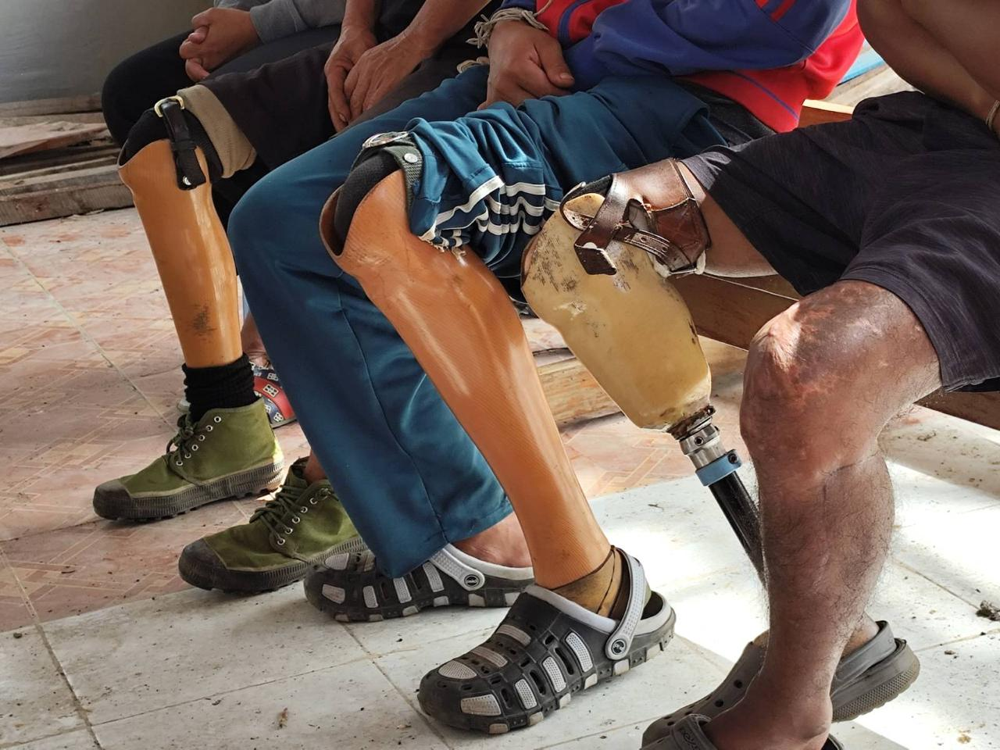

Three men sit side by side, each with a prosthetic leg. The image records more than physical injury. It points to the chain of conditions that made the injuries possible. After attacks forced villagers into displacement camps and hunger, some residents returned home to recover food. Mines planted in or near homes turned that act of survival into permanent harm.
Since the 2021 coup in Myanmar, many resistance-held areas have faced air attacks, village burnings, shelling, and forced displacement. Families who fled to internally displaced persons camps often lost regular access to food and livelihoods. In several conflict zones, landmines and other explosive hazards were left in civilian spaces, including homes and farmland. Returning to recover rice, tools, or crops became an extreme risk.

Not Applicable.
The photograph captures a central contradiction in this archive. Ordinary survival labor became disabling because the landscape itself was militarized. Searching for food after displacement was not a combat act, yet it carried battlefield consequences. As testimony, the image connects landmine violence to hunger, forced movement, and long-term bodily loss.
It also underscores broader themes of memory and resilience. Prosthetics mark injury, but they also mark continued life and adaptation. The scene resists reduction to a single data category; it requires historical context, ethical attention, and recognition of the limits of machine interpretation.